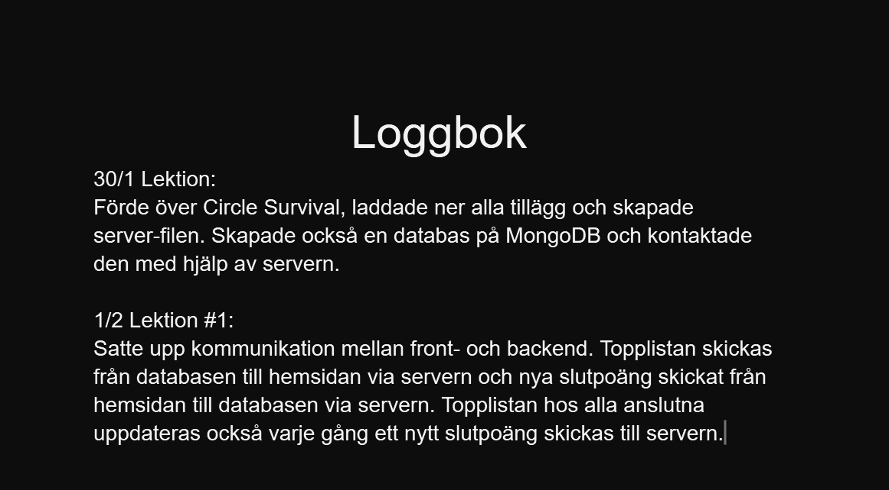
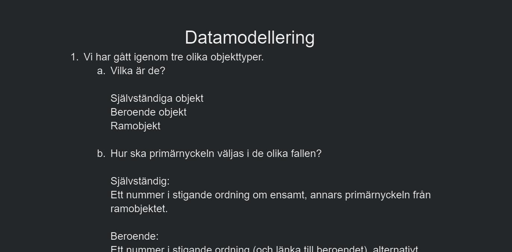
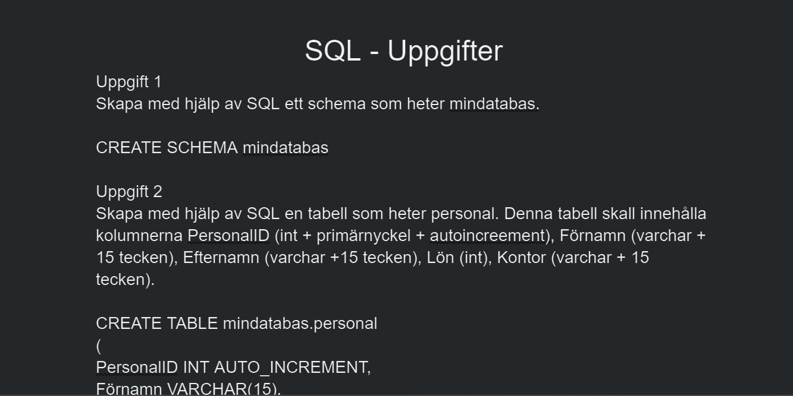
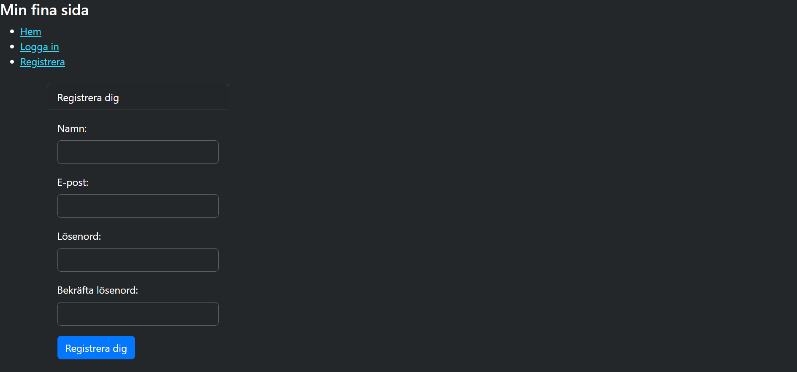

Välkommen till min hemsida. Jag heter Emil och går på NTIG i Uppsala.
Detta är en hemsida som jag har skapat för att vara ett centrum där
man kan komma till och från alla mina projekt som jag kommer att göra
under kursen Webbutveckling 1 och 2. Nedanför denna ruta finns det ett
antal rutor med namn, bild och information om det specifika projekten,
samt en länk till till sidan. Jag hoppas att du tycker mina projekt är
intressanta och rika på information.
 Denna sidan berättar om den svenska dataspelsindustrins nuvarande
storlek och dess utveckling. Det finns också en undersida som berättar
om några av de största svenska dataspelsföretagen och en del av deras
produkter.
Denna sidan berättar om den svenska dataspelsindustrins nuvarande
storlek och dess utveckling. Det finns också en undersida som berättar
om några av de största svenska dataspelsföretagen och en del av deras
produkter.
Till hemsidan
 This site gives you the basics on the survival city building game
Frostpunk. It also tells you about the different scenarios that you
can play and all is supplemented with pictures.
This site gives you the basics on the survival city building game
Frostpunk. It also tells you about the different scenarios that you
can play and all is supplemented with pictures.
Till hemsidan
 Detta är mina profil på FreeCodeCamp, som är en hemsida vi använder i
Webbutveckling 2 för att låra oss JavaScript. På denna sidan kan du se
hur många uppgifter jag har gjort och när jag har gjort dem.
Detta är mina profil på FreeCodeCamp, som är en hemsida vi använder i
Webbutveckling 2 för att låra oss JavaScript. På denna sidan kan du se
hur många uppgifter jag har gjort och när jag har gjort dem.
Till hemsidan
 Ett överlevnadsspel där du försöker överleva så länge du kan under ett
konstant ökande anfall av fiender. Det gäller att undvika och bekäma
dina motståndare så effektivt som möjligt och göra de bästa valen av
uppgtraderingar.
Ett överlevnadsspel där du försöker överleva så länge du kan under ett
konstant ökande anfall av fiender. Det gäller att undvika och bekäma
dina motståndare så effektivt som möjligt och göra de bästa valen av
uppgtraderingar.
Till hemsidan

Loggboken för databastillägget för Circle Survival.
Till loggboken
 Koden för Circle Survival med DB.
Koden för Circle Survival med DB.
Till koden
Videon för Circle Survival med DB.
Till video

Uppgifter och svar för datamodellering.
Till dokumentet

Uppgifter och svar för SQL.
Till dokumentet
Koden för inloggnignssidan.
Till koden

Video om användingen av inloggnignssidan.
Till video